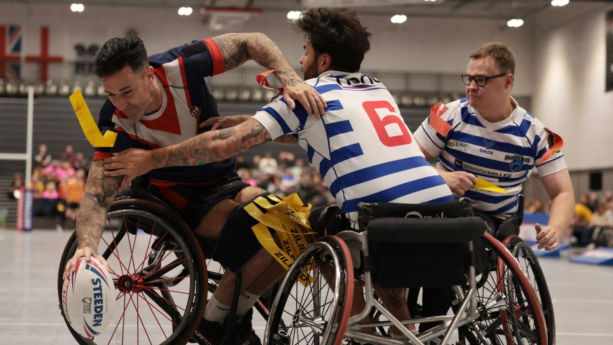
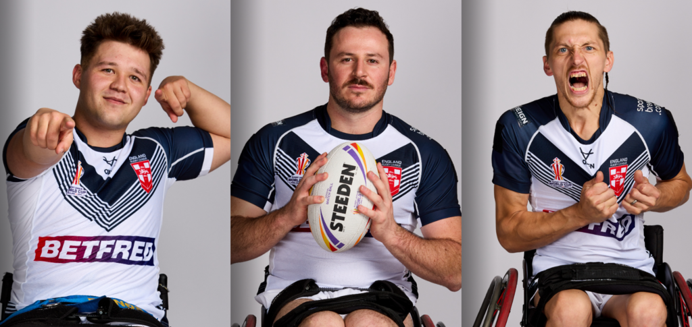
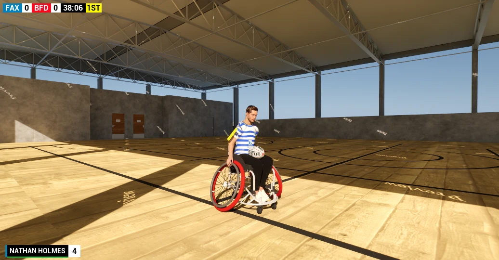
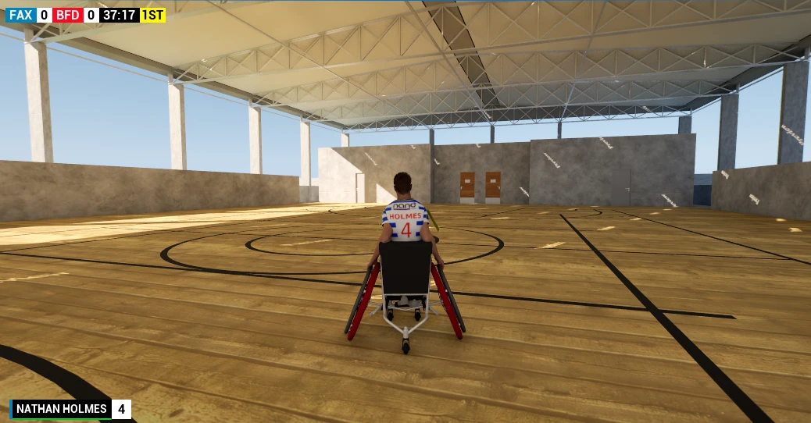

Chair-first handling
Acceleration, momentum, grip, sprinting, steering and pushing combine to make the chair itself part of the skill ceiling.
Built specifically for Wheelchair Rugby League — not adapted from a standing-rugby game. Chair control, body position, contact, passing rules and player individuality are being designed around the sport itself.
Wheelchair Rugby League has its own rhythm. Momentum matters. Body position matters. Space closes differently. A pass cannot simply go anywhere. Contact can change the whole play. The game is being built around those differences from the start.
Acceleration, momentum, grip, sprinting, steering and pushing combine to make the chair itself part of the skill ceiling.
Leaning changes handling now and is being connected to stability, recovery and how reachable a shoulder tag actually is.
Passing respects the no-forward-pass rule, scoring is deliberate, and tackling is being built around tags, tipping and chair contact.
Attributes and traits are intended to change what each player can do, not simply decorate a team-selection screen.


The foundations already go beyond a wheelchair prototype. Movement, possession, passing, kicking, scoring and match state are beginning to connect into a real game loop.
Build speed through acceleration, carry momentum, find grip through turns, sprint, push and use upper-body position to change how the chair responds.
Pick up possession, pass left or right without breaking the WRL forward-pass rule, and kick forward with a controlled arc.
Tries are manual: enter the correct in-goal with possession and choose to score. Home and away scoring feed the game state and scoreboard.
Stability and tipping are the bridge into the tackle system. Speed, steering, lean direction and contact will determine whether a player holds the chair, lifts a wheel, recovers — or goes over.
These screenshots are taken directly from the current development build. Movement, possession, passing, kicking, scoring and the match clock are all already playable.


Pre-AlphaEnvironments, crowd, lighting and visual polish are all in progress. Full gameplay footage is coming as development continues.
Player data is designed to affect the game itself. Speed and Acceleration shape movement. Agility already controls functional lean range. Handling, Passing and Kicking can shape ball play, while Tackling, Aggression and Recovery can feed the physical contest.
Every push should matter. Every angle should matter. Every hit should change the next decision. The game is being built around momentum, positioning and interaction so matches do not feel like the same sequence repeating over and over.
There is a clear path from the systems working today to the 5v5 game the project is aiming for. No dates are being promised — the focus is on building each layer properly.
Stability, tipping and recovery lead directly into tag removal, defender reach, body-position accessibility, chair contact, big-wheel defence and match restarts.
The next major leap is getting full teams on pitch and making the match flow around the core mechanics already being built.
Once the game underneath is strong enough, presentation can turn a playable match into an event that looks and sounds like Wheelchair Rugby League.
The main page is for the game. The development log goes deeper into why individual mechanics matter and how they are being implemented.
Leaning became a true gameplay input, with Agility controlling each player's functional movement range.
Body position now changes chair performance through sprint and turning behaviour instead of existing only as animation.
Speed, steering, lean direction and contact are being brought together into a readable stability and tipping system.
The long-term ambition is bigger than a prototype: work with people around Wheelchair Rugby League, broadcast and the wider Rugby League community to create something credible, visible and worth following.
Logos are shown as context for conversations and future collaboration ambitions and do not imply endorsement, licensing, sponsorship or an official partnership unless separately announced.
Sign up for development updates and be first to hear when alpha testing opens up. Or follow the build in real time through the development log.
You're in. We'll be in touch when there's something worth sharing.